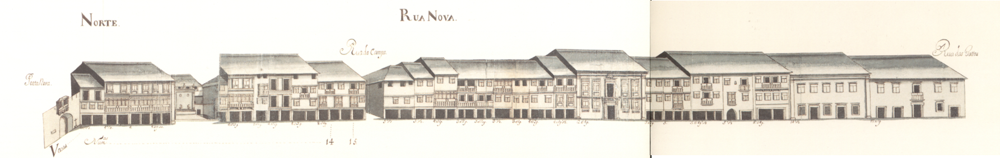

Rua Nova - vista norte.

Rua Nova - vista sul.
Rua Nova - vista norte.
Rua Nova - vista sul.
Eixo fundamental da cidade, na sequencia da rua do Souto , define com ela a metade Norte e a metade Sul de Braga .
Alargada no tempo de D. Diogo de Sousa , ligava a rua do Souto com o Campo das Hortas , através de uma abertura, feita nessa data na muralha, a Porta Nova . Esta porta viria a ser alterada na sua arquitectura, em 1772 , segundo um desenho atribuído a André Soares .
Rua de primordial importancia, nela se situava, de Este para Oeste, a igreja da Misericórdia , a casa brasonada de familiares de D. Jorge da Costa , cardeal de Alpedrinha e uma fonte (aberta por D. Diogo de Sousa e reconstruida por D. Frei Agostinho de Jesus ).
Mais importante ainda e o facto de ser por esta rua que os novos Arcebispos faziam a sua entrada solene na cidade sempre corn grande pompa e festejos.
0 Mappa mostra-nos uma rua repleta de gelosias, uma forma de fechar as janelas e portas de varandas muito comuns (das casas da burguesia comercial?)-,bastantes edifícios de três pisos e algumas mesmo de quatro; e muitas com varandas.
No extremo so ficava um pequeno mercado coberto, a Pracinha , espaço aberto tambem por D. Diogo de Sousa , que ao longo dos tempos, e ate 1750 , teve os nomes de praça da Hortalice , praça do Pescado e praça do Pão , designações que mostram bem a actividade economica que nela se praticava.
Uma significativa perda de importância comercial e social deverá ter acontecido a partir da data de mudança do centro comercial da cidade , da zona da Sé para a da Arcada .
A rua Nova corresponde hoje exactamente à rua de D. Diogo de Sousa ; a Pracinha mantém também o tradicional sentido toponímico, com o nome de praça Velha . Com 27 casas de cada lado pertenciam ao Cabido 13 do lado Norte e 1 do lado Sul.
Hoje esta rua mantém ainda muitas das casas que apresentava em 1750 . As que foram alteradas correspondem, porém, a uma tipologia de pisos e aberturas de fachada semelhantes; só as gelosias desapareceram integralmente. A fonte foi tapada em finais do seculo passado.
A Pracinha viu os seus edifícios crescer em altura, sobretudo do lado Este e o mercado coberto foi retirado em data que desconhecemos.

Rua Nova

Rua Nova
Enfiteuta: None
Foro: None
Descrição:
Enfiteuta: João Gomes da Cruz, ourives, e sua mulher, Angélica Maria de Araújo
Foro: 120 reis e 1 galinha
Descrição: Descrição não encontrada
Enfiteuta: Rosa Vitória, viúva de João da Silva
Foro: 70 reis e 2 galinhas
Descrição: Descrição não encontrada
Enfiteuta: Manuel Pereira Tadim
Foro: 50 reis e 1 galinha
Descrição:
Enfiteuta: Teresa Tomásia, viúva de Agostinho Marques da Silva, ourives.
Foro: 200 reais e 2 galinhas
Descrição:
Enfiteuta: Teresa Tomásia, viúva de Agostinho Marques da Silva, ourives.
Foro: 50 reis e 1 galinha
Descrição:
Enfiteuta: António Fernandes Veloso, ourives de prata, e sua mulher, Assunção Vieira
Foro: 60 reis e 1 galinha
Descrição:
Enfiteuta: Vid. casa nº32, Rua de Maximinos(rua nº22).
Foro: None
Descrição:
Enfiteuta: Vid. casa nº10.
Foro: None
Descrição:
Enfiteuta: Luísa da Rocha
Foro: 260 reis e ...galinhas
Descrição:
Enfiteuta: Lic.Custódio de Azevedo Proença
Foro: 340 reis e galinhas
Descrição:
Enfiteuta: Lic.Custódio de Azevedo Proença
Foro: 420 reis e 2 galinhas
Descrição:
Enfiteuta: Lic. Henrique Ferreira Carmo
Foro: 300 reis e 2 galinhas
Descrição:
Enfiteuta: Vid. casa nº1 da Rua do Campo(rua nº1).
Foro: None
Descrição:
Enfiteuta: Enfiteuta não encontrado
Foro: Foro não encontrado
Descrição: